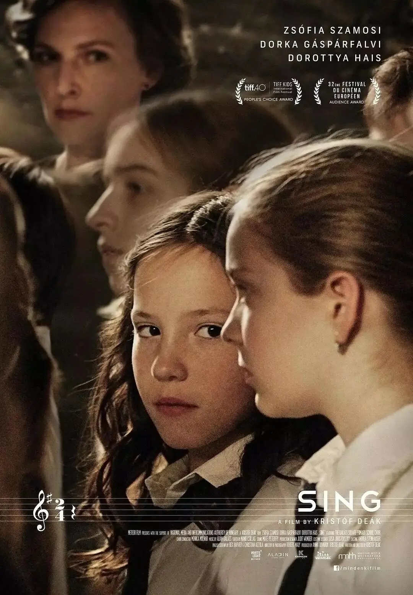
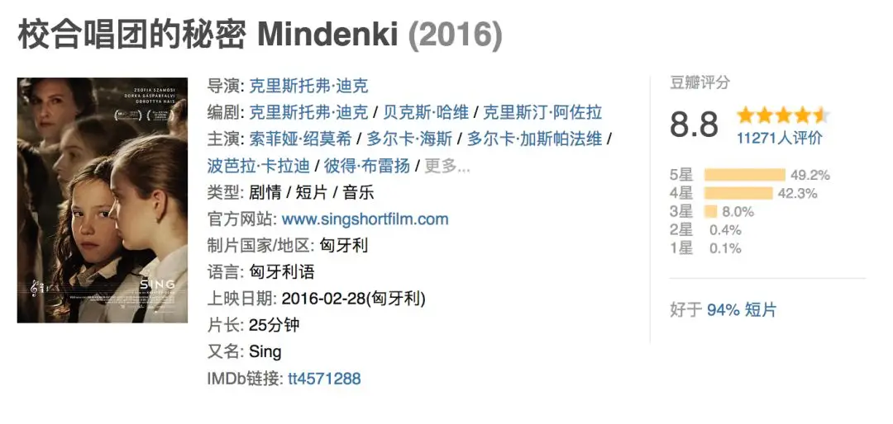
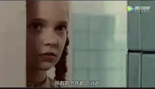
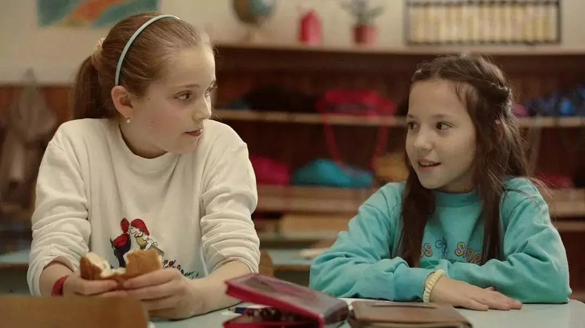
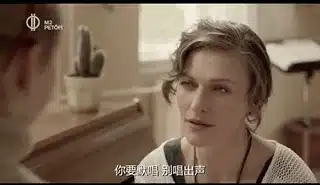
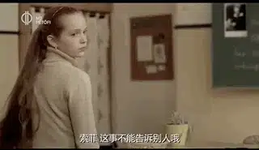
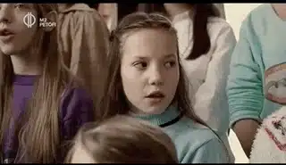
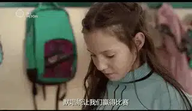
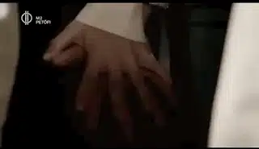

今天介绍一部小事件、大格局的短片《校合唱团的秘密》。
此片荣获第89届奥斯卡最佳真人短片，通过小孩子的视角审视了成人世界里的不公和虚伪。
豆瓣评分8.8

小女孩丽萨刚刚转入一所新的学校。
刚踏入学校，丽萨就被校合唱团美妙的歌声吸引了。
他们的合唱是那么的动听，而丽萨又是那样的喜爱歌唱。

于是，丽萨很快便加入了校合唱团。
同时她在学校里也收获了友谊，认识了自己的好朋友索菲。
两人都很喜欢音乐，会一起听唱片，一起玩耍。

对于丽萨，新学校里的生活是如此的快乐。
直到一次合唱排练后，事情发生了变化。
指挥老师单独留下了丽萨，并告诉她，以后在排练中，你不能够发声，你只需要默唱就可以了。

丽萨非常不解地问老师为什么。
老师告诉她，她唱的不好，会影响整个合唱团的水平，而合唱团马上要参加一个大型比赛，必须要胜出。
同时，老师威胁她不要告诉别的同学，毕竟，你也不想让别人知道你没有他们的水准。

这对于一个爱唱歌的小女孩来说，绝对是一个很大的打击。
但是想到老师的话，她也只能忍气吞声。
自从这件事以后，丽萨每次参加完合唱团后，总是非常悲伤。
她的情绪被索菲发现了，在她的追问下，丽萨终于鼓起勇气告诉了她真相。
苏菲难以置信，因为老师平时对她非常好，她也非常尊敬和喜欢这位老师。
当她再次参加合唱团时，她一直在观察身边的同学。
果然，里面有很多同学只是像鱼一样张着嘴，并没有发声。

合唱团发生的事情令索菲愤怒。
她告诉老师要退出合唱团。
可是老师不允许她离开，因为索菲的声音非常好听。
老师这样劝导索菲：
人生并非总是公平的，亲爱的！
我知道你喜欢合唱团，大家都喜欢，都想要成为其中的一员，这里的每个人都在努力付出，没错，甚至是那些没有唱出声的也是。
不是每个人像你这么有天赋，如果只让有天赋的人加入，那样公平吗？
但如果让所有人都唱，我们永远成不了最优秀的....
有些同学唱的不好，我从不想点名或让谁丢脸.....
他们好好默唱，我们就能赢得比赛，而你美妙的歌声也会更为突出....
如果有人一时冲动，决定让我们失去这些美妙的东西，你觉得公平吗？

这个理由看上去很正当，甚至说是用心良苦。
但是在小孩子眼里，只有对错，没有利益。
索菲知道不让别人发声是不对的，她更明白热爱音乐的丽萨每次这样静默有多悲伤。
于是，索菲和合唱团其他小伙伴做了一件让所有人都想不到的事。
他们用小孩子的正义和团结战胜了大人世界里的规则和不公。

短片里展现出来的情景，我相信我们都非常熟悉。
我们总是用诡辩和虚伪当作粉饰黑暗的借口。
我们总能够找出很多理由来让不正确的事情合理化，总是用自以为聪明的傲慢去伤害作为人的最基本的尊严。
甚至，我们还会以“多数人的利益，多数人的道德”让别人永远闭嘴。
岂不知，我们自欺到一个程度，竟然比不上一个孩子。
在孩子眼中，如此简单明了的事情，我们却总是讨论过来讨论过去，难以明辨是否。
或者，我们根本就不看重对错，只在乎自己的利益。
只不过是想要用一些手段让自己的良心好过一些。
活在这样的罪恶里，我们离“做一个正常的人”越来越远了。
我们不知道无数个可爱的丽萨在静默里独自流泪、又不敢告诉别人自己的悲伤。
我们已经泯灭了对于同胞的关爱和感知能力，我们漠视了上帝赐给每个人神圣不可剥夺的做人的尊严。
到最后，我们伤害最大的其实是我们自己。
因为漠视别人就是在作贱自己。
我们都不知道我们在自欺和冷漠中渐渐变成了一个不明是非、满口假仁假义、里外不一、难以相信别人的魔鬼。
在线观看《小合唱团的秘密》
相关推荐：
100双绝望的眼睛
奥斯卡影帝，你把自己演死了
73年过去了，纳粹离我们有多远？
这里没有挑逗你眼目情欲的小鲜肉
也没有挑动你肉体情欲的段子
更没有膨胀你今生骄傲的鸡血
我们只在乎那些最质朴真诚的作品
在那里我们才能恢复真正的想象力
我们也坚信这才是我们真正需要的

ID:Six_hundred_hits
长按二维码，一键关注
【六百击】
-END-
电影评论
尽情分享朋友圈

苹果打赏
通道
小提示：文末广告是腾讯配送广告，内容与本号无关，但您的每次点击（无需反复点）都会给平台带来几毛收益，欢迎您点击支持六百击。